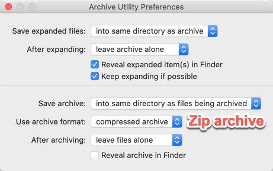

Linux Command - zip/unzip
linux 下的 压缩/解压缩（zip/unzip）命令。
zip#
zip - package and compress (archive) files
format#
The basic command format is zip options archive inpath inpath ...
where archive is a new or existing zip archive and inpath is a directory or file path optionally including wildcards.
- If the name of the zip archive does not contain an extension, the extension
.zipis added.
zip 打包当前目录：
zip 打包 log 文件：
FAN-MB1:zip $ zip -v avg_speed ~/Downloads/Logs/*-avg_speed.log
adding: ~/Downloads/Logs/2019-12-01-10-avg_speed.log (in=2394) (out=795) (deflated 67%)
adding: ~/Downloads/Logs/2019-12-01-11-avg_speed.log (in=1638) (out=642) (deflated 61%)
adding: ~/Downloads/Logs/2019-12-01-15-avg_speed.log (in=1640) (out=656) (deflated 60%)
adding: ~/Downloads/Logs/2019-12-01-21-avg_speed.log (in=1184) (out=472) (deflated 60%)
total bytes=6856, compressed=2565 -> 63% savings
zip 打包 png 文件：
FAN-MB1:zip $ zip -v map_image ~/Downloads/Images/map-*.png
adding: Users/faner/Downloads/Images/map-深圳市东湖公园.png (in=2619042) (out=2597184) (deflated 1%)
adding: Users/faner/Downloads/Images/map-深圳市梧桐山森林公园.png (in=2592064) (out=2567088) (deflated 1%)
adding: Users/faner/Downloads/Images/map-深圳市民中心周边公园.png (in=2888867) (out=2877121) (deflated 0%)
total bytes=8099973, compressed=8041393 -> 1% savings
exclude#
将当前目录下，除了 donotinclude.h、orthis.h 之外的所有 .h 和 .c 文件压缩打包成 archive，并将命令执行输出重定向到指定文件 tofile：
zip 打包当前目录，排除 .DS_Store 文件及 __MACOSX 文件夹（下的所有文件）：
zip -r archive.zip . -x .DS_Store
zip -r archive.zip . -x __MACOSX/\*
zip -r archive.zip . -x \*/.DS_Store \*/__MACOSX/\*
zip split#
- 首先将其压缩成一个大的zip压缩包之后再分卷
- 将压缩完的大压缩包zip分卷
命令执行完会在文件夹下生成 b.zip、b.z01、b.z02 ...等。
modes#
zip now supports two distinct types of command modes, external and internal.
- The external modes (
add,update, andfreshen) read files from the file system (as well as from an existing archive) while the internal modes (deleteandcopy) operate exclusively on entries in an existing archive.
add
Update existing entries and add new files. If the archive does not exist create it.
This is the default mode.
update (-u)
Update existing entries if newer on the file system and add new files. If the archive
does not exist issue warning then create a new archive.
freshen (-f)
Update existing entries of an archive if newer on the file system. Does not add new
files to the archive.
delete (-d)
Select entries in an existing archive and delete them.
copy (-U)
Select entries in an existing archive and copy them to a new archive. This new mode is
similar to update but command line patterns select entries in the existing archive
rather than files from the file system and it uses the --out option to write the
resulting archive to a new file rather than update the existing archive, leaving the
original archive unchanged.
面对一堆文件压缩包，zip 命令就像是一个无需解压就能直接操作的“虚拟档案管理员”。如果不加区分地使用，很容易导致压缩包里混入了旧文件、漏掉了新文件，或者充斥着大量冗余备份。
为了帮你彻底理清这 5 个命令的使用场景，我们可以把 .zip 压缩包想象成一个“实体档案盒”。下面为你梳理它们各自的工作逻辑和最佳适用场景：
| 命令 (Flag) | 档案盒比喻 | 遇到新文件 | 遇到同名旧文件 | 遇到同名新文件 | 典型应用场景 |
|---|---|---|---|---|---|
| add (默认) | 粗暴收纳员 | 塞进去 | 直接覆盖 | 直接覆盖 | 初次打包、全量备份 |
| update (-u) | 精明盘点员 | 塞进去 | 留下旧的 | 替换成新的 | 增量备份、日常同步 |
| freshen (-f) | 版本校对员 | 视而不见 | 留下旧的 | 替换成新的 | 修复/更新部分文件 |
| delete (-d) | 无情剪刀手 | / | 彻底撕毁 | / | 清理敏感/冗余文件 |
| copy (-U --out) | 克隆分拣机 | 挑出来复制 | 留下旧的 | 复制新的过去 | 提取部分文件、格式转换 |
1. add —— 简单粗暴的“全能打包工” (默认模式)#
- 行为逻辑：不管三七二十一，把文件扔进包里。如果没有这个包，它就顺手缝一个。
- 生动场景：你要给朋友发送一个项目的初始代码，或者你要做一次全新的系统备份。你不在乎覆盖，因为这就是一次全新的归档。
- 命令示例：
For example, if foo.zip exists and contains foo/file1 and foo/file2, and the directory foo contains the files foo/file1 and foo/file3, then zip -r foo.zip foo or more concisely zip -r foo foo will replace foo/file1 in foo.zip and add foo/file3 to foo.zip. After this, foo.zip contains foo/file1, foo/file2, and foo/file3, with foo/file2 unchanged from before.
So if before the zip command is executed foo.zip has:
- foo/file1
- foo/file2
and directory foo has:
- file1
- file3
then foo.zip will have:
- foo/file1
- foo/file2
- foo/file3
where foo/file1 is replaced and foo/file3 is new.
# 创建一个全新的 archive.zip，并把 all_files/ 下的东西全塞进去
zip -r archive.zip all_files/
# 顺手把新生成的 log.txt 也强行塞进已有的包里（覆盖同名旧文件）
zip archive.zip log.txt
2. update —— 懂变通的“增量备份大师” (-u)#
- 行为逻辑：只进不出，升级换代。遇到文件系统的新文件就收下；遇到压缩包里没有的就新增；但如果文件系统里的文件比压缩包里的还要旧，它就会聪明地跳过，绝对不会让压缩包里的文件“降级”。
- 生动场景：每天凌晨自动运行的备份脚本。你只希望把当天修改过的新文件更新进去，绝对不能因为不小心执行了旧脚本，就把压缩包里刚改好的最新版给覆盖了。
- 命令示例：
3. freshen —— 苛刻的“版本更新专员” (-f)#
- 行为逻辑：铁面无私，只换旧的，绝不添新。它只会在压缩包里寻找同名文件，如果发现本地磁盘上的更新，就替换掉包里的旧版本。如果本地有个包里没有的新文件，它会完全无视。
- 生动场景：你从同事那里拿到了一个大型项目压缩包，同事告诉你他修改了其中几个核心文件发给了你。你把这些核心文件放在旁边，执行
freshen操作，就能精准地把包里的旧文件“刷新”成新版本，而不会被无关的新文件弄乱结构。 - 命令示例：
4. delete —— 干净利落的“空间魔法师” (-d)#
- 行为逻辑：精准打击，物理超度。根据通配符匹配，把压缩包里指定的文件彻底抹除，且不改变其他文件。
- 生动场景：你发现压缩包里混入了一些巨大的临时文件（如
.DS_Store或node_modules/），或者包含密码的配置文件不小心被打包进去了。用delete可以直接将其从压缩包内“物理销毁”，免去了先解压再重新打包的麻烦。 - 命令示例：
用 macOS Archive Utility.app 打包生成的 zip 文件中，通常包含 .DS_Store 文件。如何删除 macOS 压缩包中的隐藏文件？
remove the entry foo/tom/junk, all of the files that start with foo/harry/, and all of the files that end with .o (in any path).
用 macOS Archive Utility.app 打包生成的 zip 文件中，通常包含 __MACOSX/ 目录。
FAN-MB1:zip $ unzip -l map_image-arch.zip
Archive: map_image-arch.zip
Length Date Time Name
--------- ---------- ----- ----
2619042 12-02-2018 10:37 map-深�?��?�?�?�?��?�.png
575 12-02-2018 10:37 __MACOSX/._map-深�?��?�?�?�?��?�.png
2592064 12-02-2018 10:38 map-深�?��?梧�?山森�??�?��?�.png
575 12-02-2018 10:38 __MACOSX/._map-深�?��?梧�?山森�??�?��?�.png
2888867 12-02-2018 10:33 map-深�?��?�?中�?�?�边�?��?�.png
575 12-02-2018 10:33 __MACOSX/._map-深�?��?�?中�?�?�边�?��?�.png
--------- -------
8101698 6 files
执行 zip -d 删除 __MACOSX/ 目录下的内容：
FAN-MB1:zip $ zip -d map_image-arch.zip __MACOSX/\*
deleting: __MACOSX/._map-深圳市东湖公园.png
deleting: __MACOSX/._map-深圳市梧桐山森林公园.png
deleting: __MACOSX/._map-深圳市民中心周边公园.png
FAN-MB1:zip $ unzip -l map_image-arch.zip
Archive: map_image-arch.zip
Length Date Time Name
--------- ---------- ----- ----
2619042 12-02-2018 10:37 map-深�?��?�?�?�?��?�.png
2592064 12-02-2018 10:38 map-深�?��?梧�?山森�??�?��?�.png
2888867 12-02-2018 10:33 map-深�?��?�?中�?�?�边�?��?�.png
--------- -------
8099973 3 files
如果想保留原始压缩包，可通过 -O output-file 指定保存操作后的结果。
同时删除打包进去的隐藏文件和文件夹：
zip -d file.zip .DS_Store __MACOSX/\*
5. copy —— 高效的“分类克隆搬运工” (-U --out)#
- 行为逻辑：它不是修改原包，而是基于原包生成一个全新的包。它会把原包里符合条件的文件“复制”到新包里。如果在命令行后面再加文件/通配符，它还会顺便把本地的新文件也一并打包进这个新包里。
- 生动场景：你有一个巨大的杂项压缩包，现在你只想把里面的图片文件提取出来发给别人。用
copy可以直接过滤并重组成一个新的纯图片包，原包完好无损。 - 命令示例：
# 从 original.zip 中挑出所有 jpg 图片，复制到新生成的 photos.zip 中
zip -U original.zip "*.jpg" --out photos.zip
# 进阶：不仅提取原包里的 jpg，还把当前目录下新增的 png 也一起打包进新包
zip -U original.zip "*.jpg" *.png --out new_archive.zip
总结建议#
在日常的自动化脚本或频繁的文件同步中，最常用的是 update (-u)，因为它最符合人类“只备份新东西”的直觉；而在需要对压缩包进行“外科手术式”精确调整时，delete (-d) 和 copy (-U) 则是提升效率的绝佳利器。
unzip#
unzip - list, test and extract compressed files in a ZIP archive
preview#
Preview an archive contents without extracting it
- zip:
unzip -l FILE.zip，或-v - tar.gz:
tar -tzvf FILE.tar.gz - tar.bz2:
tar -tjvf FILE.tar.bz2或bunzip2 -c FILE.tar.bz2 | tar tvf - - .7z:
7z l FILE.7z
其他：
file 命令查看文件属性：
faner@FAN-MB1:~/Downloads/zip
> file avg_speed.zip
avg_speed.zip: Zip archive data, at least v2.0 to extract
faner@FAN-MB1:~/Downloads/zip
> file -bI avg_speed.zip
application/zip; charset=binary
unzip -l 预览压缩包内容：
FAN-MB1:zip $ unzip -l avg_speed.zip
Archive: avg_speed.zip
Length Date Time Name
--------- ---------- ----- ----
2394 12-01-2019 16:54 Users/faner/Downloads/Logs/2019-12-01-10-avg_speed.log
1638 12-01-2019 16:55 Users/faner/Downloads/Logs/2019-12-01-11-avg_speed.log
1640 12-01-2019 17:00 Users/faner/Downloads/Logs/2019-12-01-15-avg_speed.log
1184 12-01-2019 21:38 Users/faner/Downloads/Logs/2019-12-01-21-avg_speed.log
--------- -------
6856 4 files
FAN-MB1:zip $ unzip -l map_image.zip
Archive: map_image.zip
Length Date Time Name
--------- ---------- ----- ----
2619042 12-02-2018 10:37 Users/faner/Downloads/Images/map-深�?��?�?�?�?��?�.png
2592064 12-02-2018 10:38 Users/faner/Downloads/Images/map-深�?��?梧�?山森�??�?��?�.png
2888867 12-02-2018 10:33 Users/faner/Downloads/Images/map-深�?��?�?中�?�?�边�?��?�.png
--------- -------
8099973 3 files
extract#
利用 unzip 命令解压 zip 到同名子目录（-d 指定）：
faner@FAN-MB1:~/Downloads/zip
> unzip avg_speed-arch.zip -d avg_speed-arch
Archive: avg_speed-arch.zip
inflating: avg_speed-arch/2019-12-01-10-avg_speed.log
inflating: avg_speed-arch/__MACOSX/._2019-12-01-10-avg_speed.log
inflating: avg_speed-arch/2019-12-01-11-avg_speed.log
inflating: avg_speed-arch/__MACOSX/._2019-12-01-11-avg_speed.log
inflating: avg_speed-arch/2019-12-01-15-avg_speed.log
inflating: avg_speed-arch/__MACOSX/._2019-12-01-15-avg_speed.log
inflating: avg_speed-arch/2019-12-01-21-avg_speed.log
inflating: avg_speed-arch/__MACOSX/._2019-12-01-21-avg_speed.log
只解压其中的某一个文件到当前目录：
faner@FAN-MB1:~/Downloads/zip
> unzip avg_speed-arch.zip 2019-12-01-10-avg_speed.log
Archive: avg_speed-arch.zip
inflating: 2019-12-01-10-avg_speed.log
GUI#
macOS 原生自带了 Archive Utility.app 软件：

- After expanding 可选择在解压后保留或移除压缩包：
- leave archive alone
- move archive to Trash
- delete archive
- Use archive format 可以从 Compressed archive 修改为 Zip archive。
How to Open and Browse ZIP Files on macOS Without Unarchiving Them
Dr. Unarchiver: Straightforward ZIP, RAR, and Other Archive ManagementZipster: Mount ZIP Files in the Finder (and Only ZIP Files)
ezip
https://apps.apple.com/cn/app/id1127253508?mt=12